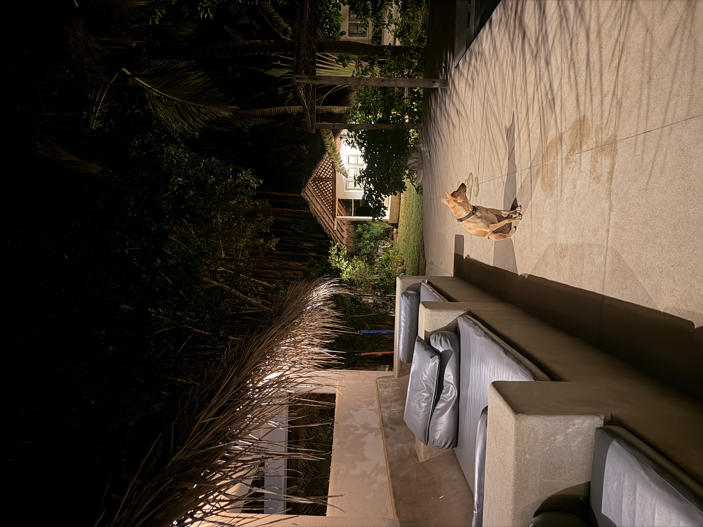
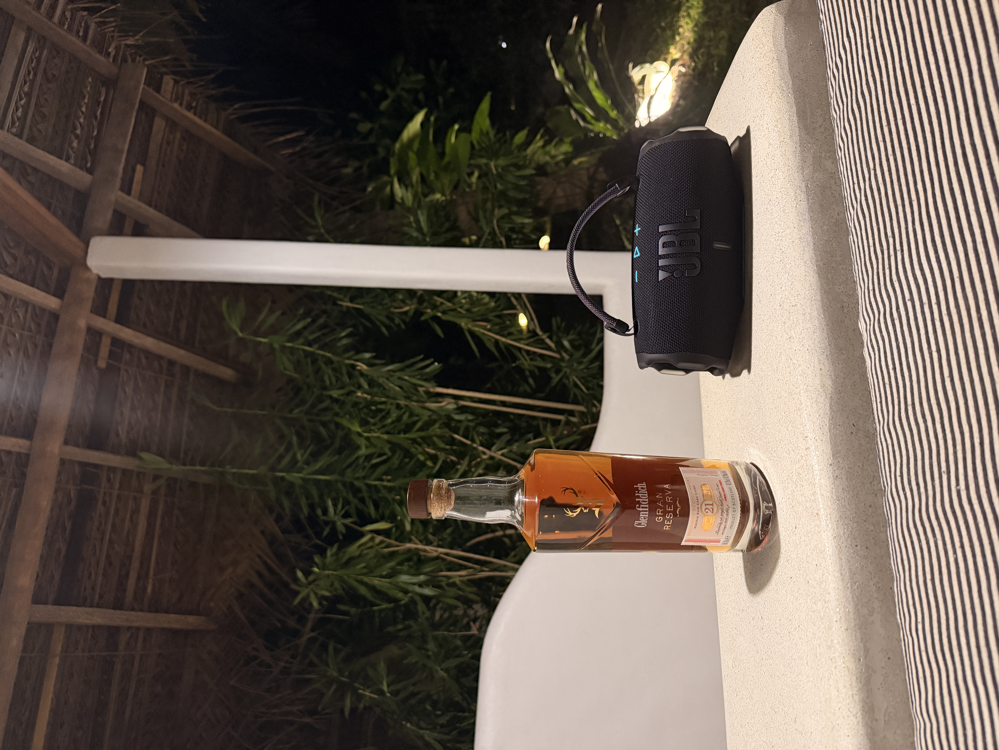
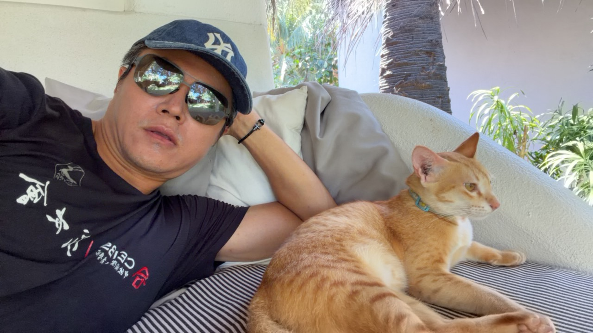
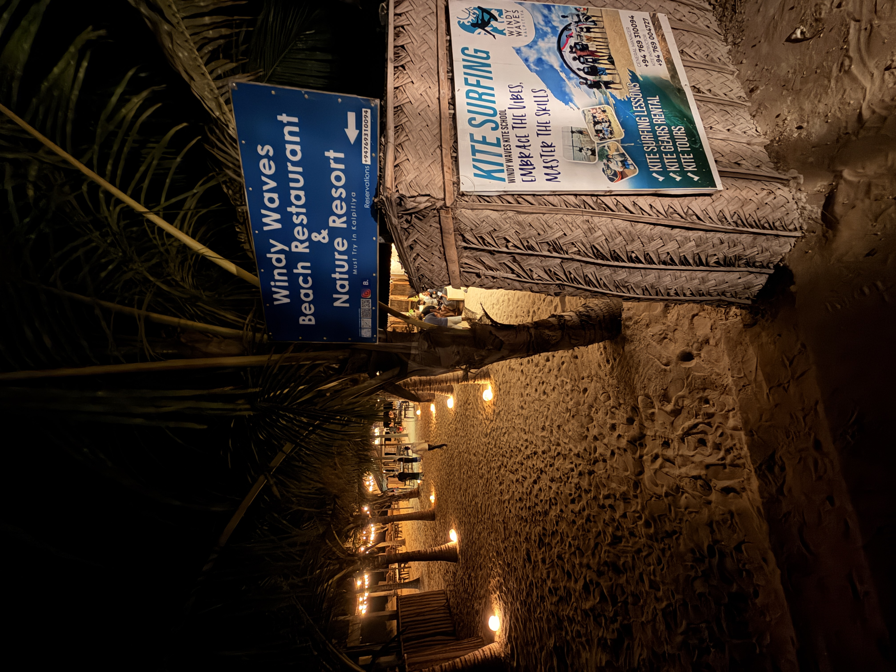
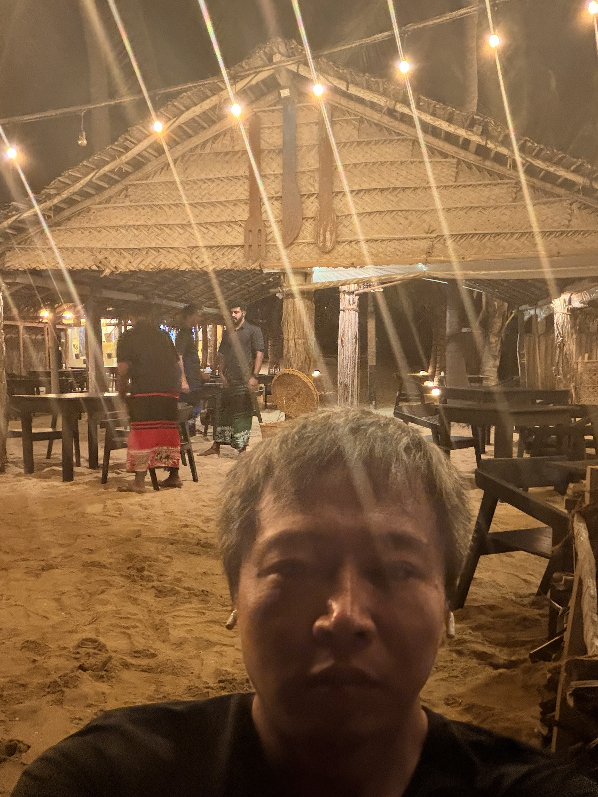
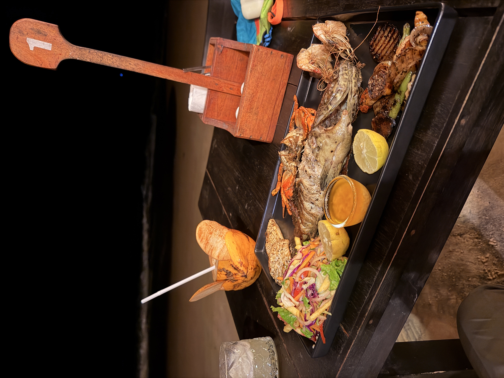

🌊 CHASING THE WIND
从雪域到无垠之海
机翼刺破云层，从北京到成都，再落进科伦坡的湿夜。
辗转十数个小时，车轮又在颠簸中丈量了三个小时的雨林与长路。
窗外掠过的灯火忽明忽暗，把所有的疲惫与心绪，都悄无声息地揉碎在南亚的海风里。
一池水，一轮月
一杯酒，一首歌
一段过往，一抹愁





穿过绵延的沙洲，眼前就是纯粹为极限而生的 Dream Spot。一面是印度洋翻滚咆哮的汹涌白浪，另一面则是被天然沙坝隔绝出如明镜般平整的泻湖水面。西南季风以极其稳定且蛮横的姿态掠过水面，风速毫无杂质地灌满气囊伞翼。
深吸一口气，拉杆，降压，切水。双向板的板刃在镜面一样的水中撕开一道泛着白沫的狭长弧线，没有拖泥带水的抗力，只有纯粹的风力拉扯着整个身体贴着水面高速飞驰。
看准起跳时机的一瞬间，风筝越过头顶，猛力压板起跳——重力在这一刻彻底失效。没有雪山冰裂缝的恐惧，只有整个人被托举在碧蓝海天之间的通透与轻盈。二十年穿梭在全球雪山寻找粉雪，而今天，在印度洋的信风里，我找到了另一场永不融化的起飞。
第二天下水换上 9m Duotone Rebel D/LAB。风力更加充沛硬朗，D/LAB 材质的刚性与拉力反馈几乎瞬时传导，切水提速迅猛，极速直接冲破 40.5 kph。
整整 4 小时 43 分钟、跨越 50.74 公里的长距离巡航与拉扯，在第 45 次起跳中将高度刷新到 4.1 米，最长滞空 3.6 秒。每一次升空后的平稳吸震与控风收板，越来越接近雪山深粉刻滑时那种随心所欲的自在。

一盘美食，一杯烈酒

